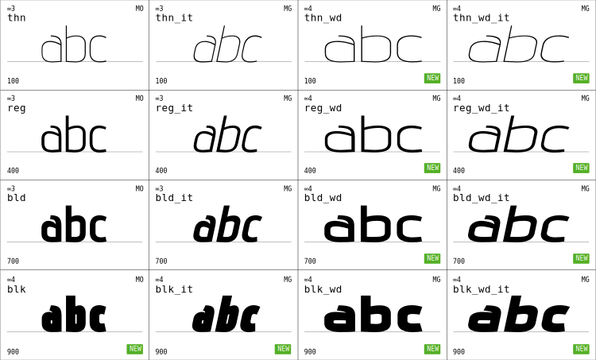

Preface
Advent is a project of VivaRado, thanks goes to all the contributors, Google Fonts and all the people who use it!

Introduction
Advent Pro is a modern display typeface, designed in 2007, this is the new version (#3.001 of 2019) that is delivered as a variable font, along with the classic formats. It supports 14 weights including italics. It is currently maintained and released by VivaRado, by it's original designer Andreas Kalpakidis. What is unique about this version is that thanks to the strict requirements of the Variable Format, all the glyph contours have been reworked, with amazing attention to quality. Then we compressed the kerning to a great degree making the font superbly kerned and compact at the same time.
Contributors:
- VivaRado support@vivarado.com
- Andreas Kalpakidis
- Madina Akhmatova
- Dave Crossland
- Michael LaGattuta mjlagattuta@gmail.com
- Behdad Esfahbod
Introduction / Profile
- Company: VivaRado LLP
- Designer: Andreas Kalpakidis
- Twitter: @vivarado
- Google Group:VivaRado Typography Google Group
Introduction / Project Overview
Project Overview
- background
- need
- scope
- activities
- important dates or deadlines
Project Name: Advent Pro Variable
- Type family name: Advent Pro Var (Advent Professional Variable)
- Proposal Date: 22/08/2018
Introduction / Project Overview / Background
Advent was originally designed during a two year period by Andreas Kalpakidis, in Athens and later in Komotini, Greece during 2006 to 2007. It was an attempt to break some of the Greek script rules and some of the Latin script rules on letterform grouping. All the letters have been in a sense simplified, and Greek Letters where fitted into Latin groups visually. The overall designed was intended to be light, the font is not intended for text but for headlines, logos, and other short message formats as a display font.
Introduction / Project Overview / Need
During 2007 there was a common problem of lack of Greek fonts, even though some agencies took this as an opportunity, Advent was released for free. It was a project that never intended to be something other than an expression of a minimal typographic style.
Introduction / Organisational Documents
Documentation Types:
- HTML - Responsive preview in HTML format - At README directory
- Standard Repository README - At the root of the repository
- PDF - At the root of the repository
Features:
- Responsive Interface
- Synchronized Sidebar
- Hashtag Navigation
- PDF with TOC and Cover
Drawbacks:
- Graphs and Diagrams will not work in github and bitbucket preview, but are still readable.
- Graphs and Diagrams will not work in PDF will be assessed.
Introduction / Phase Introduction
Initiation Phase:
This documentation being part of VivaRado ORGDOC has been implemented over the old advent documentation. Advent itself since 2007 had no real repository or vendor entity other than it was on release by multiple websites for free fonts.
Planning Phase:
All the information on how Advent was updated, produced and offered.
Introduction / Phase Introduction / Initiation Phase
Business Case:
What are the benefits we are trying to get from the project and justification of the decision. It encapsulates the research done to see if the project is worth doing.
Initiation Phase Components ∞0.001:
- Business Case:
- Strategic case
- Management case
- Business Case:
Introduction / Phase Introduction / Initiation Phase / Business Case
A business case captures the reasoning for initiating the redesign and variation of Advent.
- Business Case Components ∞0.003:
- Solution Options
- Strategic case
- Management case
Introduction / Phase Introduction / Initiation Phase / Business Case / Solution Options
Identified Solution Options:
- Update the old Advent Font to Variable.
- Redesign the old Advent Font to Variable and Include Italics.
Introduction / Phase Introduction / Initiation Phase / Business Case / Strategic case
During the initiation of the redesign of Advent, VivaRado as the current vendor, had to undergo a tool design process, as there was a clear need for faster integration of the new design, we realised that we needed a tool to somehow control the decentralised, but very helpful UFO format.
Introduction / Phase Introduction / Initiation Phase / Business Case / Management case
The management case tests the feasibility of the preferred option, in terms of its deliverability within various tolerances.
Achievability:
By implementing a set of scripts that are now part of VRD TYPL. We could manage a set of UFOs by combining the repeated parts, and keeping them as intact as possible in terms of the UFO format, we introduced internally the EFO as a pseudoformat that allows for implementation of scripts on a whole family of weights. This allowed us to overcome the decentralisation of UFOs and move forward and produce Advent successfully.
Introduction / Phase Introduction / Initiation Phase / Business Case / Management case / Achievements Plan
- Milestones
- VRD TYPL
- VRD TYPL / TypeFacet Integration
- Fontmake Kerning Bug Solution
- Dependencies
- UFO
- TypeFacet Autokern
- Fontmake
- Skillset Requirements
- Variable Font comprehension.
- Python Programming
- Web Application Development
- Type Design
- Kerning Classification
- Kerning Compression
Fontbakery Gave us a Cupcake:
.,@@'
.@@@@..@@@@.
.@@, .@ . .@@,
.@@.@` ,.@.,' '@@@
@ "@' '@" @
:@@@..@. ,@..@.@@.,@
\\ ||@@' |||| //
|| |||| ||| ||
\\ ||| || //
||||||||||
Advent Cupcake Day
April 13 2019
Image CupCake, Actual Cupcake Fairly Larger. Objects in ANSI are larger than they appear.
Introduction / Phase Introduction / Initiation Phase / Project Charter
- Project Charter Components ∞0.002:
- Project Introduction
- Project Goals
- Deliverables
- Duration
Introduction / Phase Introduction / Initiation Phase / Project Charter / Project Introduction
Project Introduction Components ∞0.002:
- Project Name
- Project Statements
- Vision Statement
- Mission Statement
- Project Definition
- Problem
- Opportunity
Introduction / Phase Introduction / Initiation Phase / Project Charter / Project Introduction / Project Statements
Vision Statement:
Contribution to libre great typography.
Mission Statement:
To expand our ideas about typography and contribute to language.
Introduction / Phase Introduction / Initiation Phase / Project Charter / Project Introduction / Project Definition
Problem Components ∞0.001:
- Problematic Vectors
- Dirty Contours
- Old Format
Opportunity Components ∞0.001:
- New Variable Font Format
- Cleaner Contrours
- Compression Concepts
- Lighter Offering
Introduction / Phase Introduction / Initiation Phase / Project Charter / Project Goals
- Goals for ∞ 3.000:
- To bring an updated Advent Pro to the Variable format,
- Add Italics Axes
- Add Weight Axes
- Goals for ∞ 4.000:
- Add Cyrillic
- Add Width Axes
- Add Optical Size Axes
Introduction / Phase Introduction / Initiation Phase / Project Charter / Deliverables
- Deliverables Components ∞0.001:
- Advent Pro Variable:
- Variation Weight Axes
- Variation Italic Axes
- Advent Pro 14 Weights:
- Classic Formats (TTF, OTF, ...)
- VRD-Typography-Library:
- EFO to UFOs
- UFOs to EFO
- EFO to VAR
- Kerning Extract Similarity (SIMEX)
- Kerning Autokern
- Kerning Compress FlatD
- Componentize EFO
- Kerning Adjust UI
- Advent Pro Variable:
Introduction / Phase Introduction / Initiation Phase / Project Charter / Duration
Duration of Advent ∞3.000:
- 22/08/2018 to 16/02/2019
Duration of Advent ∞4.000:
- April 1st 2019 to December 20th 2019
Introduction / Phase Introduction / Planning Phase
The Planning Phase, is where the project solution is further developed in as much detail as possible and the steps necessary to meet the project’s objectives.
The Planning Phase consists of:
- Safe Planning
- Stakeholders
- Quality Plan (PQP)
At this point, the project would have been planned in detail and is ready to be executed.
Introduction / Phase Introduction / Planning Phase / Safe Planning
The project's Work Planning / Project Plan is created outlining the activities, tasks, dependencies, and timeframes.
Safe Planning Components (Scope Management):
- Projeect Plan:
- Work Planning:
- Tasks Assignments
- Dependencies
- Schedule Planning.
- Timeline
Introduction / Phase Introduction / Planning Phase / Safe Planning / Project Plan
Decide on the encoding sets and supported language scripts. Decide and plan the weights and how you will generate each weight. Understand the procedures and steps. Calculate or keep track of timelines, steps procedures and pitfalls.
- Project Plan Components ∞0.001:
- Design
- Production
- Masters and Instances
- Kerning
- Components
- Language Scripts and Glyph Range
- Features
- Delivery
Introduction / Phase Introduction / Planning Phase / Safe Planning / Project Plan / Design
Advent originally featured 7 weights of geometric sharp curved high rise forms and modernized Greek Letters. This realease features 14 weights, the original updated and improved forms along with italics.
Introduction / Phase Introduction / Planning Phase / Safe Planning / Project Plan / Production
To produce the font, Illustrator and Fontlab was used originally in 2007, updating to Advent Pro Variable in 2018, a set of scripts for Adobe Illustrator (JSX) and Fontlab (Python) where written, additionally python scripts and bash, for the composition and kerning. Later on VRD Typography Library was introduced allowing for easier modifications to the font by utilizing a new format - a container for UFO, called the EFO. VRD TYPL for kerning - and compression and Googles fontmake to compile the final variable font.
Work was done on a Linux box with VirtualBox running Windows 8 and Mac OSX Lion.
Introduction / Phase Introduction / Planning Phase / Safe Planning / Project Plan / Masters and Instances
The diagram shows the Original Masters (MO), Generated Masters (MG) that get adjusted manually and the automatically generated instances (MA).

image: #001, 0.002, svg, Advent Masters and Instances sankey.
Masters
| name | weight | size | version |
|---|---|---|---|
| Thin Normal | 100 | 8pt, 24pt, 144pt | 3.000 |
| Regular Normal | 400 | 8pt, 24pt, 144pt | 3.000 |
| Bold Normal | 700 | 8pt, 24pt, 144pt | 3.000 |
| Black Normal | 700 | 8pt, 24pt, 144pt | 4.000 |
| Thin Wide | 100 | 8pt, 24pt, 144pt | 4.000 |
| Regular Wide | 400 | 8pt, 24pt, 144pt | 4.000 |
| Bold Wide | 700 | 8pt, 24pt, 144pt | 4.000 |
| Black Wide | 700 | 8pt, 24pt, 144pt | 4.000 |
| Thin Italic Normal | 100 | 8pt, 24pt, 144pt | 3.000 |
| Regular Italic Normal | 400 | 8pt, 24pt, 144pt | 3.000 |
| Bold Italic Normal | 700 | 8pt, 24pt, 144pt | 3.000 |
| Black Italic Normal | 700 | 8pt, 24pt, 144pt | 4.000 |
| Thin Italic Wide | 100 | 8pt, 24pt, 144pt | 4.000 |
| Regular Italic Wide | 400 | 8pt, 24pt, 144pt | 4.000 |
| Bold Italic Wide | 700 | 8pt, 24pt, 144pt | 4.000 |
| Black Italic Wide | 700 | 8pt, 24pt, 144pt | 4.000 |
Instances
| acro | weight | name | master | version |
|---|---|---|---|---|
| thn | 100 | Thin (Hairline) | MO | 3.000 |
| xlg | 200 | Extra Light (Ultra Light) | MA | 3.000 |
| lgt | 300 | Light | MA | 3.000 |
| reg | 400 | Regular | MO | 3.000 |
| med | 500 | Medium | MA | 3.000 |
| smb | 600 | Semi Bold (Demi Bold) | MA | 3.000 |
| bld | 700 | Bold | MO | 3.000 |
| xbd | 800 | Extra Bold (Ultra Bold) | MA | 3.000 |
| blk | 900 | Black (Heavy) | MO | 4.000 |
| thn-wd | 100 | Thin (Hairline) | MG | 4.000 |
| xlg-wd | 200 | Extra Light (Ultra Light) | MA | 3.000 |
| lgt-wd | 300 | Light | MA | 3.000 |
| reg-wd | 400 | Regular | MG | 4.000 |
| med-wd | 500 | Medium | MA | 3.000 |
| smb-wd | 600 | Semi Bold (Demi Bold) | MA | 3.000 |
| bld-wd | 700 | Bold | MG | 4.000 |
| xbd-wd | 800 | Extra Bold (Ultra Bold) | MA | 3.000 |
| blk-wd | 900 | Black (Heavy) | MG | 4.000 |
| thn-it | 100 | Italic Thin (Hairline) | MG | 3.000 |
| xlg-it | 200 | Italic Extra Light (Ultra Light) | MA | 3.000 |
| lgt-it | 300 | Italic Light | MA | 3.000 |
| reg-it | 400 | Italic Regular | MG | 3.000 |
| med-it | 500 | Italic Medium | MA | 3.000 |
| smb-it | 600 | Italic Semi Bold (Demi Bold) | MA | 3.000 |
| bld-it | 700 | Italic Bold | MG | 3.000 |
| xbd-it | 800 | Extra Bold (Ultra Bold) | MA | 3.000 |
| blk-it | 900 | Black (Heavy) | MG | 4.000 |
| thn-wd-it | 100 | Italic Thin (Hairline) | MG | 4.000 |
| xlg-wd-it | 200 | Italic Extra Light (Ultra Light) | MA | 3.000 |
| lgt-wd-it | 300 | Italic Light | MA | 3.000 |
| reg-wd-it | 400 | Italic Regular | MG | 4.000 |
| med-wd-it | 500 | Italic Medium | MA | 3.000 |
| smb-wd-it | 600 | Italic Semi Bold (Demi Bold) | MA | 3.000 |
| bld-wd-it | 700 | Italic Bold | MG | 4.000 |
| xbd-wd-it | 800 | Extra Bold (Ultra Bold) | MA | 3.000 |
| blk-wd-it | 900 | Black (Heavy) | MG | 4.000 |
Axes
| axes | version |
|---|---|
| weight axes only | 3.000 |
| italic axes with weight axes | 3.000 |
| weight and italic axes | 3.000 |
| weight and width | 4.000 |
| width axes only | 4.000 |
| italic axes with weight axes and width axes | 4.000 |
| optical Size | 4.000 |
An example of what we are planning in terms of the new Black MO (Original Master) and new Wide MO. The wide version is planned to be 20% Wider compared to the current normal and the black version is planned to be 60% Bolder compared to the current bold.
nrmwdebldblk" />
image: #002, 0.002, svg, Advent MO and MG Masters.
Introduction / Phase Introduction / Planning Phase / Safe Planning / Project Plan / Kerning
With the help of Typefacet Integrated Autokern, we have obtained the first layer of kerning for the upright bold. By using VRD TYPL Kerning Adjust, we made the corrections, and the rest of the optimisations required per weight.
We have Classified our glyphs in a way where no kerning loss is observed. By dividing by Language Set, without language intrusion between classes. Small Case and Capitals are also non intruding. This increases size minimally but maintains kerning pair loss at zero.
During the process we attempted to maintain the Italics width according to the contour. This created a larger alteration size and jittering italics transition due to changing width - even if the kerning was precise. We eventually opted for the slant-to-right-side-corner and maintained the regular kerning along to the italics and smoother animation on Italics.
Introduction / Phase Introduction / Planning Phase / Safe Planning / Project Plan / Kerning / Standard Sets
All the letter combinations have been kerned but we also perform testing afterwards, for various reasons (Ommited) some kerning pairs are not included. This brings us to testing the kerning on a specific set of letters, the other letters are left to maintain the mechanical, automated kerning.
VivaRado standard kerning sets are defined as follows:
Letter Based(LB):
- Latin Capitals(LBLC):
A B C D E F G H I J K L M N O P Q R S T U V W X Y Z
- Latin SmallCase(LBLS):
a b c d e f g h i j k l m n o p q r s t u v w x y
- Greek (GREEK UNICODES)(LBGC):
Α Β Γ Δ Ε Ζ Η Θ Ι Κ Λ Μ Ν Ξ Ο Π Ρ Σ Τ Υ Φ Χ Ψ Ω
- Greek SmallCase(LBGS):
α β γ δ ε ζ η θ ι κ λ μ ν ξ ο π ρ σ ς τ υ φ χ ψ ω
- Numbers(LBNU):
0 1 2 3 4 5 6 7 8 9
- Latin Capitals(LBLC):
Resulting Permutations that have been Adjusted:
Letter Based Permutations (LB):
- Latin VS Latin Capitals Letter Based Permutation (LBLCLC)
- Latin VS Latin SmallCase Letter Based Permutation (LBLSLS)
Latin Capitals VS Latin SmallCase Letter Based Permutation (LBLCLS)
Greek VS Greek Capitals Letter Based Permutation (LBGCGC)
- Greek VS Greek SmallCase Letter Based Permutation (LBGSGS)
- Greek Capitals VS Greek SmallCase Letter Based Permutation (LBGCGS)
Letter to Letter Adjustments:
- These are small adjustments due to design quirks, and when we decide that a glyph doesn't fit into classes or the class is not satisfying the kerning requirements completely.
- Ommited:
- Cross Language System Kerning (grek to latn and latn to grek).
- Greek "sigma1" on the Left Side for all grek.
Introduction / Phase Introduction / Planning Phase / Safe Planning / Project Plan / Kerning / Results
The resulting kerning is:
{'GG': 4458, 'GL': 761, 'LG': 708, 'LL': 166}
Total Pairs: 6093
More information in: Kerning Pair Details
If you notice a possible kerning improvement we would like to hear about it.
Introduction / Phase Introduction / Planning Phase / Safe Planning / Project Plan / Components
Components are created by first running VRD/TYPL/SIMEX to obtain a component similarity index, then VRD/TYPL/COMPONENTS to Componentize the EFO, later you can export to Componentized UFOs.
Introduction / Phase Introduction / Planning Phase / Safe Planning / Project Plan / Scripts
At this moment advent supports Latin, and Greek Encoding as ∞3.000.
Version ∞3.000:
Current Character Support:
- Latin
- Extended Latin
- Greek
- Baltic
- Turkish
Intended Character Support:
- The Proposed Encoding/Glyph List: /encodinglist/suggestedencoding.py
- Current Encoding/Glyph List: /encodinglist/currentencoding.enc
Version ∞4.000:
- Google Latin Plus
- Google Cyrillic Plus
- Google Greek
- Opentype Features Glyphs
Script Expansion
During script expansion (SE), we have a NAM file, with unicode and name information located here. And the appropriate MO PDF files for each weight or MO. The work takes place per MO or weight, per glyph and the appropriate procedues take place. The MG (Generated Masters) don't need new vectors, just adjustments so those masters don't have PDF files with vectors. The task is then to position the vectors in the font. While working with the plans we update them to reflect the given changes. At the same time we repair any notable contour fixes, width fixes and whatever we see that is out of order.
We have divided the vector integration work to given procedures:
- GP (Glyph Placement)
- WA (Width Adjustment)
- GF (Glyph Fix)
Glyph Placement:
When dealing with a MO (Original Master), we initially position the vectors in the font, without any worry for width. Glyph Placement also deals with assigning components.
Width Adjustment:
This deals with the adjustment of the glyph width where we determine if we have similar looking glyphs and transfer the width to the newly added glyph.
Glyph Fix:
This is intended for the MG (Generated Masters), like italics or wide version where we keep the original glyphs but adjust them after applying an effect like slant or width.
From the ADV3SeCintegration file:
1024 0x0400 Ѐ CYRILLIC CAPITAL LETTER IE WITH GRAVE False
GP_MG (thn,reg,bld),
WA_MO (thn,reg,bld),
GF_MG (thn_it,reg_it,bld_it),
WA_MG (thn_it,reg_it,bld_it)
We can then see that this glyph has been updated with the following procedures:
- GP_MG (Glyph Placement):
- Component from existing glyphs like "E". This glyph has been placed for three Generated Masters (thn,reg,bld)
- WA_MO (Width Adjustment):
- Widths (bearings) have been adjusted. This glyph widths have been adjusted for three Original Masters (thn,reg,bld)
- GFMG (Glyph Fix):
- This glyph was fixed after application of an effect like slant or width. This glyph has been fixed for three Generated Masters (thnit,regit,bld
- Widths (bearings) have been adjusted. This glyph widths have been adjusted for three Generated Masters (thnit,regit,bld
Introduction / Phase Introduction / Planning Phase / Safe Planning / Project Plan / Glyphs
Version ∞3.000:
The glyph range is ≃ 391
Version ∞4.000:
The glyph range is ≃ 647
Introduction / Phase Introduction / Planning Phase / Safe Planning / Project Plan / Features
Advent features at this moment include:
liga:
- sub f l by fl;
- sub f i by fi;
- sub f f l by ffl;
- sub f t by ft;
- sub t t by t_t;
- sub w w w by www;
- sub gamma gamma by gamma_gamma;
- sub gamma kappa by gamma_kappa;
- sub lambda lambda by lambda_lambda;
Introduction / Phase Introduction / Planning Phase / Safe Planning / Project Plan / Hinting
TrueType Hints
Introduction / Phase Introduction / Planning Phase / Safe Planning / Project Plan / Delivery
Advent Pro Variable will be delivered in 7 Weights & 7 Italic Weights and Variable format. All the Adobe Illustrator scripts, Fontlab Python and additional scripts will be provided. Forks of the original libraries with their alterations, and Encoding Files.
The delivered font files are provided in UFO, WOFF, WOFF2, OTF, TTF, EFO.
All the above files are available here.
Variable font flavors designspace: - Variable with weight axes only - Variable italic with weight axes - Variable with weight and italic axes
Introduction / Phase Introduction / Planning Phase / Safe Planning / Project Plan / Usage
To compile from UFO:
fontmake -o variable -m '/font.designspace' --output-path '/adventpro-VF.ttf'
Or from EFO:
python3 '/efo_to_var.py' -s '/font_source/EFO' -o '/adventpro-VF.ttf'
Introduction / Phase Introduction / Planning Phase / Safe Planning / Work Planning
Kerning Work Breakdown Structure
sequenceDiagram
loop Advent
LevelA->>LevelB: Advent Work Plan
alt Glyphs
alt Design
LevelB-->LevelC: Cleaning and optimizing
end
alt Components
alt Generate groups.PLIST
LevelC->>LevelE: SIMEX to 100%
alt Componentize Glyphs
LevelD-->LevelE: According to SIMEX 100%
end
alt Anchoring
LevelD-->LevelE: According to Anchors.JSON
end
end
end
end
alt Kern
LevelB-->LevelC: Flat Kerning
alt Run Autokern
LevelC->>LevelE: Autokern Settings
end
LevelB-->LevelC: Compressed Kerning
alt Generate groups.PLIST
LevelC->>LevelE: SIMEX to 80%
alt Review groups.PLIST
LevelD-->LevelE: Best Practices
alt Quality Targets
LevelD-->LevelE: No Cross Script
LevelD-->LevelE: Alpha. Order Parent Children
end
end
alt Compress Flat Kerning
LevelD-->LevelE: According to groups.PLIST
end
end
LevelB-->LevelC: Tested Kerning
alt Kern Adjust UI
LevelC->>LevelE: According to LB Permutations
alt Review, Adjust
LevelD-->LevelE: Quality Targets
alt Quality Targets
LevelD-->LevelE: No Kerning Loss
end
end
alt Compress Flat Kerning
LevelD-->LevelE: According to groups.PLIST
LevelD-->LevelE: According to adjustments.JSON
end
end
end
alt Variable
LevelC-->LevelD: Export Variable
alt EFO to VAR
LevelE->LevelD: End
else FontMake
LevelE->>LevelD: By Designspace
end
end
end
diagram: #006, ∞0.001, mermaid, Work Breakdown Structure of Advent for Kerning.
Introduction / Phase Introduction / Planning Phase / Safe Planning / Work Planning / Task Assignments
- Assumptions Research:
- VivaRado, Andreas Kalpakidis (∞3,4)
- Docs Update:
- VivaRado, Andreas Kalpakidis (∞3,4):
- Identify Dependencies
- Identify Resource Requirements
- VivaRado, Madina Akhmatova (∞3,4)
- VivaRado, Andreas Kalpakidis (∞3,4):
- Advent:
- Design
- VivaRado, Andreas Kalpakidis (∞1,2,3,4)
- Componentization
- VivaRado, Andreas Kalpakidis (∞3,4)
- Michael La Gatutta (∞3)
- Kerning
- VivaRado, Andreas Kalpakidis (∞3,4):
- Build
- Test
- Michael La Gatutta (∞3):
- Best Practices
- VivaRado, Andreas Kalpakidis (∞3,4):
- Design
- VRD TYPL:
- VivaRado, Andreas Kalpakidis (∞3,4):
- Build
- Test
- VivaRado, Madina Akhmatova (∞3,4):
- Compression Logic
- VivaRado, Andreas Kalpakidis (∞3,4):
Introduction / Phase Introduction / Planning Phase / Safe Planning / Work Planning / Dependencies
For the kerning we depend on TypeFacet Autokern.
Introduction / Phase Introduction / Planning Phase / Safe Planning / Schedule Planning
Overview:
2019-04-27:
We have a layout for the plan of Script Extension and Master Extension that will take place between 2019-04-27 until 2019-06-02.
We will initially design and integrate the Cyrillic to Advent∞3, to 3 Original Masters (MO) and 3 Generated Master (MG). The design and integration for Advent∞3 SeC will take approximately 11 days. At this point Advent∞3 will be available with Cyrillic at 7 Instances of Upright and 7 Instances of Italic.
After that we will branch and update the Advent∞3: 3 MO and 3 MG with additional Masters 1 MO and 9 MG, Initially we will do a Master Extension for Latin and then a Script Extension for all the new masters. That will cover the Black and Wide axes and result to Advent∞4. For the Latin Masters Extension (MeL), Greek Masters Extension (MeG) and Cyrillic Script Extension (SeC) this will require approximately 20 Days.
The planning is for alphabetic glyphs and does not include any calculation of additional glyphs of any form. We will have to review the progress and update accordingly. After the review of the plan and assignment of additional tasks for fulfilment of additional glyphs, kerning and arbitrary corrections, Advent∞4 will be available with Cyrillic at 18 Instances of Upright and Upright Wide, 18 Instances of Italic and Italic Wide, total of 36 Instances.
gantt
dateFormat YYYY-MM-DD
title Advent Schedule
section Advent 3
#ADV-0001 Advent 3: done, des1, 2018-08-22, 2019-02-16
#ADV-0003 Advent 3 PR: done, des2, 2019-02-16, 2019-04-01
#ADV-0004 Advent 4 Planning: des3, after des2, 2019-04-30
#ADV-0004-0001: done, des4, 2019-03-31, 2h
ADV-0004-0002 Compare NAM: done, des5, 2019-04-09, 2h
ADV-0004-0003 MI Map: done, des6, 2019-04-10, 2h
ADV-0004-0005 Autokern Reintegration to TYPL - Standalone Repo: done, des8, 2019-04-12, 6h
ADV-0004-0006 Cupcake Day!: done, des9, 2019-04-13, 2h
ADV-0004-0007-0001 Advent 3 and 4 Master Planning: des10, 2019-04-14, 2019-04-25
ADV-0003-0008-0001 Advent 3 Script Extension Cyrillic (SeC) Planning: des27, 2019-04-26, 2h
ADV-0004-0007-0001 Advent 4 Master Extension Latin (MeL) Planning: des28, 2019-04-27, 2h
ADV-0004-0008-0001 Advent 4 Script Extension Cyrillic (SeC) Planning: des28, 2019-04-27, 1h
#
section Advent 3 SE Cyrillic
ADV-0003-0008-0001 Advent 3 SE Cyrillic: crit, des29, 2019-04-27, 22d
ADV-0003-0008-0001-0001 Advent SeC MO: done, des30, 2019-04-27, 9d
SeC MO 1 reg (04/27 to 04/30): done, des39, 2019-04-27, 3d
MO reg Capital: done, des31, 2019-04-27, 5h
MO reg Capital 39/39: done, des31, 2019-04-28, 5h
MO reg SmallCase 9/45: done, des31, 2019-04-28, 1h
MO reg SmallCase 45/45: done, des62, 2019-04-29, 4h
3 SeC MO 2 thn (04/30 to 05/03): done, des40, after des39, 3d
MO thn Capital 15/39, SmallCase 17/45: done, des63, 2019-05-01, 4h
MO thn Capital 39/39, SmallCase 45/45: done, des64, 2019-05-02, 2h
3 SeC MO 3 bld: done, des41, after des40, 3d
MO bld Capital 39/39, SmallCase 45/45: done, des65, 2019-05-05, 5h
ADV-0003-0008-0001-0002 Advent SeC MO Integration of vectors: done, des58, after des30, 10d
3 SeC MO 1 thn: done, des64, after des30, 3d
MO thn Capitals: done, des59, 2019-05-07, 5h
MO thn LowerCase: done, des62, 2019-05-08, 5h
MO thn Complete: done, des63, 2019-05-09, 6h
3 SeC MO 2 reg: done, des65, after des64, 3d
MO reg 16/39 Capitals: done, des59, 2019-05-09, 6h
MO reg Capitals: done, des67, 2019-05-10, 6h
MO reg Complete: done, des68, 2019-05-11, 8h
3 SeC MO 3 bld: done, des66, after des65, 4d
MO bld 24/39 Capitals: done, des69, 2019-05-14, 4h
MO bld All Capitals: done, des70, 2019-05-15, 2h
MO bld Complete: done, des71, 2019-05-16, 5h
ADV-0003-0008-0001-0001 SeC MG: des32, after des58, 3d
3 SeC MG 1 reg_it: des42, after des58, 1d
3 SeC MG 2 thn_it: des43, after des42, 1d
3 SeC MG 3 bld_it: des44, after des43, 1d
#
section 4 ME Latin and Greek
ADV-0004-0007-0001 4 ME Latin and ME Greek: crit, des33, after des32, 12d
ADV-0004-0007-0001 MeL MO: des34, after des32, 4d
4 MeL MO 1 reg: des45, after des32, 1d
4 MeL MO 2 thn: des46, after des45, 1d
4 MeL MO 3 bld: des47, after des46, 1d
4 MeL MO 4 blk: des57, after des47, 1d
ADV-0004-0007-0001 MeL MG: des35, after des34, 8d
4 MeL MG 1 reg_it, reg_wd_it: des48, after des34, 2d
4 MeL MG 2 thn_it, thn_wd_it: des49, after des48, 2d
4 MeL MG 3 bld_it, bld_wd_it: des50, after des49, 2d
4 MeL MG 4 blk_it, blk_wd_it: des51, after des50, 2d
#
section 4 SE Cyrillic
ADV-0004-0008-0001 4 SE Cyrillic: crit, des36, after des35, 12d
ADV-0004-0008-0001 SeC MO: des37, after des35, 4d
4 SeC MO reg 1: des51, after des35, 1d
4 SeC MO thn 2: des52, after des51, 1d
4 SeC MO bld 3: des53, after des52, 1d
4 SeC MO blk 4: des60, after des53, 1d
ADV-0004-0008-0001 SeC MG: des38, after des37, 8d
4 SeC MG reg_it 1, reg_wd_it: des54, after des37, 2d
4 SeC MG thn_it 2, thn_wd_it: des55, after des54, 2d
4 SeC MG bld_it 3, bld_wd_it: des56, after des55, 2d
4 SeC MG blk_it 4, blk_wd_it: des61, after des56, 2d
Current:
- ADV-0003 / from February 02 2019 to April 01 2019:
- Advent PR ∞3.000
- We are waiting for PR to Google Fonts.
- Advent PR ∞3.000
- ADV-0004 / After PR in April 2019:
- Advent ∞4.000
- ADV-0004 Advent ∞4.000 Planning / After PR whole April 2019:
- Planning for ∞4.000:
- Project Goals
- Duration
- Alphabetic Glyphs:
- Script Extension:
- Advent 3 SE Cyrillic 11 days
- Advent 4 SE Cyrillic 10 days
- Master Extension
- Advent 4 ME Latin and Greek 11 days
- Script Extension:
- Alphabetic Glyphs:
- Masters and Instances
- Masters and Instances Map
- Scripts
- Encoding NAM Files
- Glyphs
- Personnel Plan
- Planning for ∞4.000:
- ADV-0003 / from February 02 2019 to April 01 2019:
Completed:
ADV-0001 / July 01 2018 to 2019-02-16:- Advent ∞3.000 Delivered.
- ADV-0004:
ADV-0004-0002 Compare Current Encoding Support against NAM2019-04-09 2hADV-0004-0003 Masters and Instances Map2019-04-10 4hADV-0004-0005 Autokern Reintegration to TYPL2019-04-12 6hADV-0004-0006 Advent Fontbakery Cupcake Day!2019-04-13 2hADV-0004-0007-0001 Advent Master Planning2019-04-14 2h- Master Planning MA and MG added to README/plans
- ADV-0003-0008:
ADV-0003-0008-0001-0001 Advent SeC MO
Task Codes:
- ADV-∞-0002: Encodings
- ADV-∞-0003: Information Architecture
- ADV-∞-0005: Kerning
- ADV-∞-0005-0001: Kerning Planning
- ADV-∞-0006: Mentions
- ADV-∞-0007: Masters
- ADV-∞-0007-0001: Master Planning
- ADV-∞-0007-0002: Master Extension
- ADV-∞-0008: Script Extension
- ADV-∞-0008-0001: Cyrillic Script Extension (SeC)
- ADV-∞-0008-0001-0001: SeC Capitals, SeC SmallCase MO and MG
- ADV-∞-0008-0001-0002: SeC integration of vectors to the font.
- ADV-∞-0008-0001: Cyrillic Script Extension (SeC)
Task Codes Versioned:
- ADV-0003: Advent 3
- ADV-0003-0007: Masters
- ADV-0003-0007-0001: Master Planning
- ADV-0003-0008: Script Extension
- ADV-0003-0008-0001: Cyrillic Script Extension (SeC)
- ADV-0003-0008-0001-0001: SeC Capitals MO and MG
- ADV-0003-0008-0001-0002: SeC SmallCase MO and MG
- ADV-0003-0008-0001: Cyrillic Script Extension (SeC)
- ADV-0003-0007: Masters
- ADV-0004: Advent 4
- ADV-0004-0002: Encodings
- ADV-0004-0003: Information Architecture
- ADV-0004-0005: Kerning
- ADV-0004-0005-0001: Kerning Planning
- ADV-0004-0007: Masters
- ADV-0004-0007-0001: Master Planning
- ADV-0004-0007-0002: Master Extension
- ADV-0004-0008: Script Extension
- ADV-0004-0008-0001: Cyrillic Script Extension (SeC)
- ADV-0004-0008-0001-0001: SeC Capitals, SmallCase MO and MG
- ADV-0004-0008-0001-0002: SeC integration of vectors to the font.
- ADV-0004-0008-0001: Cyrillic Script Extension (SeC)
- ADV-0004-0008-0001: Cyrillic Script Extension (SeC)
Introduction / Phase Introduction / Planning Phase / Safe Planning / Schedule Planning / Timeline
- July 01 2018: Start of Redesign
- January 28 2019: Final Kerning for CB for G and L.
- January 31 2019: Contour Fixes, Updates for all weights and anchor alignments.
- February 16 2019: Updated to match contour optimisations of mjlagattuta fork, Updated sources. Observe process at Advent Third Pickup +
- February 17 2019: Updated to match Kerning Classification optimisations of mjlagattuta fork. Further Classification updates, reduction of kerning pairs by 307, Updated sources. Observe process at Advent Third Pickup +
- March 23 2019: Documentation Restructure, according to VivaRado ORGDOC.
- April 01 2019: Initiation of planning for Advent 4.
- April 14 2019: Standalone repo for autokern in python3 and 2.
- April 27 2019: Plan for delivery of Advent 4
- April 29 2019: ADV-0003-0008-0001-0001 SeC MO 1 reg
Introduction / Phase Introduction / Planning Phase / Stakeholders
We identify the Stakeholders by a Personnel Plan and create a Communication Plan to keep the Stakeholders informed.
Stakeholders Components:
- Applicable Stakeholders (Concious and Unconcious Entities):
- clients
- personell
- funders
- suppliers
- equipment
- Glyph Design Team (Gdes)
- Kern Testing Team (KeT)
- Quality Assurance Team (QaT)
- Applicable Stakeholders (Concious and Unconcious Entities):
Introduction / Phase Introduction / Planning Phase / Stakeholders / Personnel Plan
- Personnel Plan
- Organizational Structure
- team members
- internal
- Andreas Kalpakidis (∞1,2,3,4)
- Madina Akhmatova (∞3,4)
- external
- Michael La Gatutta (∞3)
- internal
- team members
- Responsibilities and Qualifications
- Project Management and Accounting: Madina Akhmatova (∞3,4)
- Planning, Development and Design: Andreas Kalpakidis (∞3,4)
- Quality Assurance and Consulting: Michael La Gatutta (∞3)
- Acceptance: Dave Crossland (∞2,3,4)
- Organizational Structure
Introduction / Phase Introduction / Planning Phase / Stakeholders / Communication Plan
- Communication Plan
- Stakeholder Feedback Mechanisms
- Weekly Notifications
- VRD Forum
- Interactive Documentation
- User Feedback Mechanisms:
- Stakeholder Feedback Mechanisms
Introduction / Phase Introduction / Planning Phase / Quality Plan
A Quality Plan describes the activities, standards, tools and processes necessary to achieve quality in the delivery of a project.
We can now create a Quality Plan by identifying the valid Quality Targets we want to achieve. Identify the Quality Policies that will be required to achieve them. Identify how to do Quality Measurement. Lastly identify how to maintain quality with Quality Management.
Quality Plan (PQP) Components:
- Quality Targets
- Quality Management
Introduction / Phase Introduction / Planning Phase / Quality Plan / Quality Targets
Quality Targets we want to achieve and what are their Acceptance Criteria, Quality Management Procedures, for each Applicable Category
- Quality Targets Components:
- Acceptance criteria
- Glyphs
- Contour Components
- Alligned Accents.
- Components.
- Contour Quality
- Point Minimisation.
- Extremas.
- Contour Components
- Kerning
- Kerning Loss
- No Loss on Standard Set permutations.
- Alpha. Order Parent Children
- Kerning Loss
- Glyphs
- Quality Management procedures
- Kerning
- Kerning Loss
- Kern Adjust Interface Screenshots before and after compression.
- Kerning Loss
- Kerning
- Acceptance criteria
Introduction / Phase Introduction / Planning Phase / Quality Plan / Quality Management
Quality Management, the nature of the Audits, Work Verification by assigning responsible personnel for Task Fulfillment and Task Checking.
- Quality Management
- Audits
- Tool Scheduling
- Work Verification
- Task fulfillment responsible personnel
- VivaRado
- Task checking responsible personnel
- VivaRado and Google Fonts
- Task fulfillment responsible personnel
Glossary
LB: Letter Based, Alphabet / Complete Range.
LBLCLC: Letter Based Latin Capital to Latin Capital
LBLSLS: Letter Based Latin Small Case to Latin Small Case
LBLCLS: Letter Based Latin Capital to Latin Small Case
LBGCGC: Greek VS Greek Capitals Letter Based Permutation
LBGSGS: Greek VS Greek SmallCase Letter Based Permutation
LBGCGS: Greek Capitals VS Greek SmallCase Letter Based Permutation
MO: Master Original, a master created entirely manually.
MG: Master Generated, a master automatically generated and manually fixed.
MA: Master Automated, completely automatically generated.
SE: Script Extension.
SeC: Script Extension Cyrillic.
ME: Master Extension.
MeL: Master Extension Latin.
Reference
VRD TYPL/kerning_adjust.py: VRD-Typography-Library-Kerning-Adjust
VRD TYPL/kerning_autokern.py: VRD-Typography-Library-Autokern
charlesmchen TypeFacet Autokern: TypeFacet Autokern